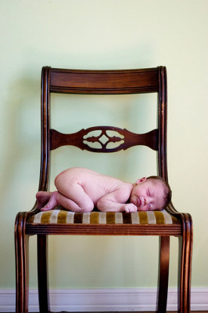

Get Your Baby Sleeping Through the Night By Using the "Queen Mother" Method
Scheduling is a time-tested way to get your baby sleeping through the night. But don't be frightened off by the "how". Answer these two
questions and you'll be swiftly rafting down the river of slumber into the dunes of dreamland...
Do you think you should set the daily agenda? or should your baby?
Here's why that matters.
There are basically two philosophies when it comes to infant sleep scheduling.
The Queen Mother Method (focused on in this article)
The Queen Mother Method (coined by yours truly) believes that Mama's word rules.
You set the schedule, the agenda, the routine, and your baby follows it.
The experts who use the Queen Mother Methodology all agree that mom sets the schedule. However, they differ
widely on how strictly mom sets it.
For example, at one end you have Supernanny Jo Frost. She prefers to see the mom-led schedule more as guidelines. You may decide that lunch
is at 12:00. However it's 11:30 and your baby is hungry. Jo says, feed at 11:30 and then adjust the rest of the schedule from there.
On the other end of the schedule spectrum author Gina Ford recommends a strict, minute-by-minute approach to getting your baby sleeping
through the night. Both authors have strong followings of parents who have found their infant scheduling suggestions effective.
Where The Queen Mother Method Came From
A kind and gentle sleep training program may be just what your baby is crying for.
Back in the 1940s, doctors would demand a very strict four-hour feeding schedule for newborns. (Breastfeeding was taboo back then.)
In 1951, psychologist John Bowlby proposed his "attachment theory" which states that infants tend to seek closeness to another person, and feels
most secure when that person is around.
Mr. Bowlby also suggested that children can be "maternally deprived", which can cause depression and other
negative consequences later in adult life.
In 1993, Dr. William Sears wrote a famous parenting guide, The Baby Book, that was based on
that philosophy. The scheduling philosophy suggested in this book became the bible to what I'm
calling the "Anti-Schedule" Approach to infant scheduling.
Today's proponents of the Queen Mother Method say that "attachment parenting" (coined by Dr. Sears) swings too far in the wrong direction.
They argue that the attachment philosophy relies too much on parents "picking up on cues". Cues, that critics say are often misunderstood
by new parents. They will often mistakenly believe that every cry is a hungry cry.
This constant feeding leads to snacking. Instead of eating larger amounts, spaced farther apart, the baby eats little meals all day long.
Snacking, they argue, is especially bad news for breastfeeding moms.
According to our Queen Mother experts, snacking means shorter feeding sessions, preventing babies from getting the
nutrient-rich and tummy-satisfying hindmilk he needs. It is hindmilk (not the initial foremilk) that fills up your baby's tummy and
lets him go longer between feedings. "Go longer between feedings" can be re-translated as "Get your baby sleeping through the night earlier".
Distinguishing Characteristics of the Queen Mother Method

{Photo by photosavvy}
The routines created by the Queen Mother experts are based on years of observing the natural rhythms of your baby as he
grows.
This philosophy believes that when your baby's days are structured and predictable, your infant will fall into her natural pattern easier,
letting your baby sleeping through the night much earlier (8-14 weeks).
How do you know if an infant scheduling philosophy is "Queen Mother" in its approach?
First of all, in this method, you always put your baby to sleep while he's still awake.Your baby must learn how to put himself to sleep. Without this skill, he will always be dependent on you to fall asleep. And
when he's 18 months old and still waking at 3:00 in the morning, that's not much fun.
Secondly, this philosophy often follows that waking up your baby is sometimes a necessity. If the schedule says she eats every 3.5 hours,
then you feed her every 3.5 hours. Even if it means waking her from a nap. By establishing a consistent rhythm throughout the day, you're more
likely to have your baby sleeping through the night sooner.
Advantages
The structure provides an easy ebb-and-flow rhythm to a household that is comforting to babies and young children.
Because the system is predictable, you know you're baby will be getting enough sleep, food, and playtime during the day.
Having a written schedule helps you plan the best times to get groceries, have playdates, and do other activities.
The system allows for watching for "baby cues" but isn't solely dependent on your ability to catch them. This gives moms more
self-confidence.
Although working moms will struggle with strict infant schedulers like Gina Ford, using a more flexible approach is entirely feasible.
Add that to a useful tracker
like this one,
and your babysitter may just hug you, or at least put you in the "Favorite Parent" category.
Heather's Ultimate Baby Sleeping Through the Night Trick
Did you know that formula is thicker than breastmilk?
Use this to your late-night advantage.
If you breastfeed, substitute that last evening feeding with a bottle of formula, and pump instead.
Since the formula is harder to digest, it will stay in his stomach longer...and he will sleep later.
I've used this trick with all three of my girls. By doing this, and the Queen Mother method during the day, I've
gotten each baby sleeping through the night by the 10th week.
Disadvantages
Families with several children in the home may have a hard time sticking to a strict schedule as advocated by Gina Ford.
For them, choosing being more flexible (like Jo Frost's) or switching to the Anti-Schedule Approach may be a sanity-saver.
If you struggle with organization and structure, the demands of The Queen Mother may be too overwhelming.
If keeping track of feedings, either
in a journal
or with an
iPhone app,
sounds stressful, this is not a good method for you to use
in getting your baby sleeping through the night.
Sometimes the training can backfire. If you've blacked out your baby's room so he'll sleep at 2:00 in the afternoon, you
may struggle to get him to sleep at Grandma's on a sunny day.
Your baby is a person with his own personality. And, honestly, some babies just don't like to be scheduled. Give scheduling a try, but after a while it may
become evident that he just isn't going to cooperate. Don't beat yourself up about it, love your baby by switching
to a different approach and he may reward you with a full nights rest!
The Nuts and Bolts of Getting Your Baby Sleeping Through the Night with This Method
I have a dilemma. I want to lay out specifics on how to get your baby sleeping through the night by scheduling. However, after weeks
of agonizing over this article, I've come to a conclusion.
There is no way I could adequately provide the details on what your, specific, schedule should look like in the length of an article. (People
write books on this!)
So here's my compromise. A while back I wrote an article for my newsletter, The Merry Mother discussing sleep training. In it, I provided a few helpful mini-reports on
how to get started. Just in case you're not a subscriber and missed it (may I suggest becoming one, so you don't miss further gold-mine reports?), you can
download my tips for a perfect
routine (which, translated, means SLEEP).
The report is a PDF document, so if you don't have the free Adobe reader on your computer, drop me an email and I'll send it to you via email.
Naturally, my mini-report doesn't cover everything. I recommend you check out or purchase one of the expert books below to get a step-by-step guide on how to use this sleep training method.
My personal favorite, and the one I used for #2 and #3 was Kim West's book below.
The Experts Weigh-In With Sleep Training Steps to Get Your Baby Sleeping Through the Night
Wondering which experts use the Queen Mother Method to get your baby to sleep through the night? How convenient! Here they are!
Do you have twins? triplets? octuplets? Several of the books above (including my personal favorite by Kim West) contain sections for sleep training multiples.
I also wrote a brief mini-guide, summarizing the different philosophies of using the Queen Mother method with multiples.
It was originally for Merry Mothers only...but I'll link to it here anyway. I hope it can help give you some good ideas.
Queen Mother Sample Schedules
Do you use the Queen Mother method of scheduling? What does your infant schedule look like?
While you're sharing, please include a little background. How old is your baby? Do you breast or bottle feed? Do you work outside the home, or are you a homemaker? Do you have other children? All these "extras" will help to flesh out how moms with similar situations can set up their own schedules. Don't forget, the first 12 entries get a free iPhone baby tracker!
Click below to see the schedules of other moms for inspiration on how to implement The Queen Mother Method of scheduling into your life.
Our Three Month Old Schedule Not rated yet I have found that my 3 month old boy will give me cues about his needs. I feel it is my job to listen to those cues and make informed choices about his …
The Loose Schedule that Works for Us Not rated yet My 4 month old baby girl Maison, is breastfed and we share a bed. she has a "loose" schedule in the morning she will wake up at about 6:30 to eat then …
How We Scheduled Our Fourth Baby Not rated yet Ian is our fourth baby, born in late November. He nurses, exclusively. I stay at-home with our children, ages 11 (girl), 8 (girl), and 5 (boy). Since we …
I just subscribed to the site, and I'm very happy I did. I have worked in the medical field for several years and love to have good resources for when things come up... ~ Crystal S.
What a great site and thanks for having it available! ~ Bernadette W.
I'm very excited to start receiving the newsletter. I've checked out your site a couple times and I loooovve how it's arranged, your language, and tips - it's great! ~ Emily N.
Heather, I can't express how happy I am I discovered your site! ~ Liza T.
Thank you Heather, for your wonderful newsletter. There is always something new! ~ Desiree T.
I'm a 1st time young mom, 23 and single, so I have found very very helpful...I can't seem to stop myself telling everyone I know about you, some thought you were my mom! ~ Vuyiswa N.
Your website is very helpful and I discovered a couple of great online stores. 'Cause I'm not a big reader, it is very nice that I can find the most important information through your
website. ~ Tonya G.
Thanks Heather! Your Milestone eBook is SO detailed and so correct. My son is doing all or most of the things and many are not mentioned in the usual books/sites. Great job and keep it up! ~ Anwesha C.
Thanks so much for creating such an AWESOME website. I really appreciate your sense of humor and real writing style. ~ Andrea Z.
My baby refused all bottles until you showed me the MAM bottle. Thank you so much for the recommendation. I wouldn't have known about them if not for your website. ~ Jennifer at Sweet Lilly ConfectionsThank you ladies! Talk about great motivation to keep writing...


 I just subscribed to the site, and I'm very happy I did. I have worked in the medical field for several years and love to have good resources for when things come up...
I just subscribed to the site, and I'm very happy I did. I have worked in the medical field for several years and love to have good resources for when things come up...